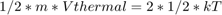
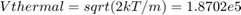
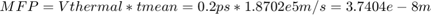
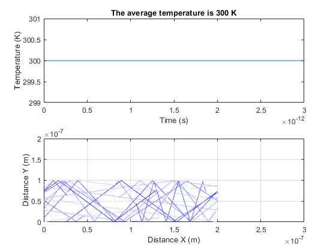
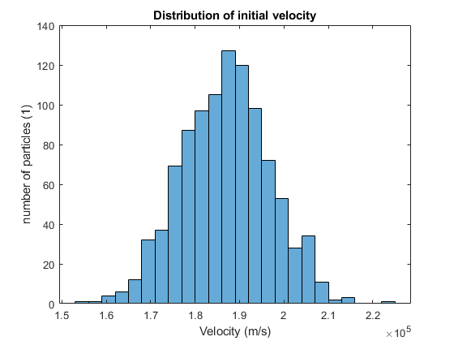
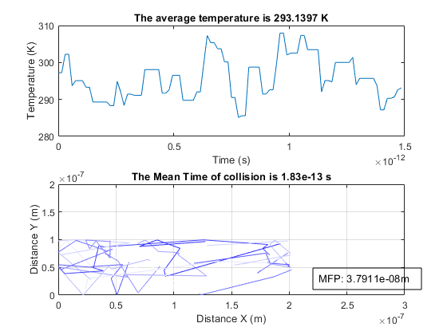
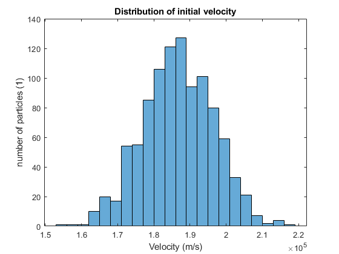
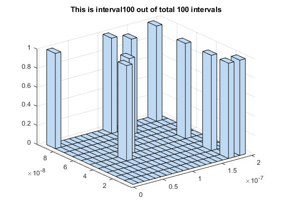
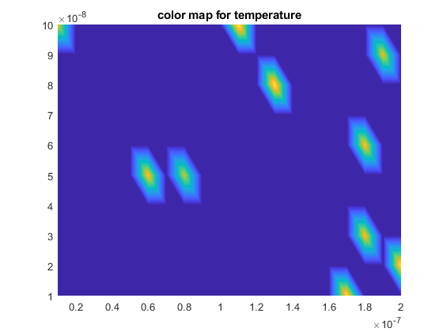
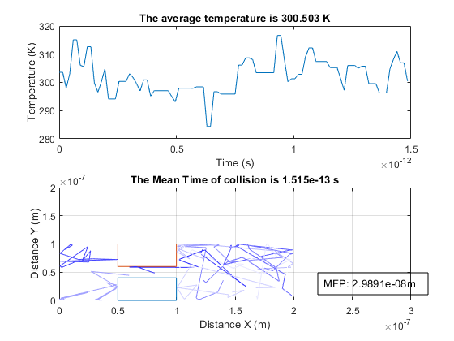

Assignment 1
Contents
P1Q1 Thermal Velocity
Note a 2D plane would have a degree of freedom of 2, the effective mass is 0.26 times of the rest mass. (shouldn’t the mass be heavier?)

 m/s
P1Q2 Mean Free Path

P1Q3, Q4 Particle trajectories and Thermal plot
The average temperature does not change, due to the fact that the magnitude of velocity for each particle does not vary. Therefore the related kinetic energy and temperature does not change.
The particles reflect when hitting top or bottom (direction of horizontal velocity flips), they jump to the other side when passing left or right boundary. The motion of jumping is valid when assuming the box next to it have the exactly same motion.
The specturm of color from light blue to deep blue indicates different particles, in total of 10 included in the plot. The A1_drawParticles_0115 contains code for initialization, and invokes traceGen_p1 file contains functions.
A1_drawParticles_0115
%
 P2 Velocity Distribution, Trajectories and Temperature plot
The thermal velocity follows a normal distribution, with mean velocity sitting at thermal velocity for T=300K.
The particles has an exponential scattering probability, defined by mean time between collisions. Both mean time between collisions and mean free path are shown in figure below. Note the mean free path here has a small difference (typical 5%) comparing to the theoretical value. This is due to the scattering effect, which is statistical instead of deterministic. The simulated result verifies the calculation in part 1.
The temperature plot varies up and down with respect to a mean thermal velocity at around 300K. This is also due to the scattering effect. Note the jumping and reflection does not vary the velocity magnitude, therefore no effect on temperature.
A1_scatter0127
%
  P3 Enhancements
The 'bottle neck' is added, the horizontal bondaries are specular and the verticle boundaries are diffusive. They are governed by the stepNext function inside traceGen_p3. The specular is the same as before, but the diffusive are added to assign new velocity while keeping particles inside.
The electron density map and the temperature map are done by dividing the region into smaller boxes, then sum the number of the electrons and the average temperature in the region
The temperature plot can really be improved by using the iterative method-> the second derivative of the adjacent cells should be zero. However that's too much work. I could also make the boxes moving during the simulation, but that might confusing since you may think the particles leak through the boxes (but they are leaking to the history of the boxes).
The compensation I used for color map is the interpolation. Note that the position of the electrons have a direct effect on the temperature plot, with small randomness on each individual velocity.
The electrons are limited to a much smaller region here with the extisting bottle neck. However, the total kinetic energy in temperature is 300K, statistically there should be little lost/gain on that due to the scattering effect. The average temperature should still be around 300K.
A1_p3box   